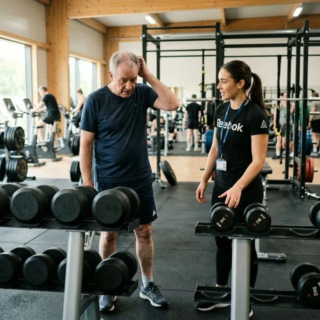
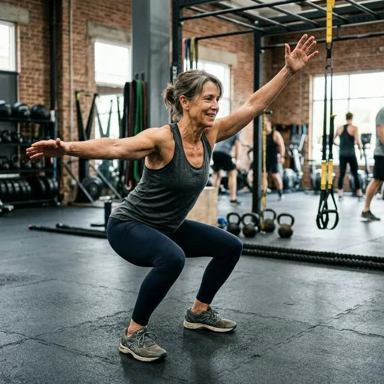
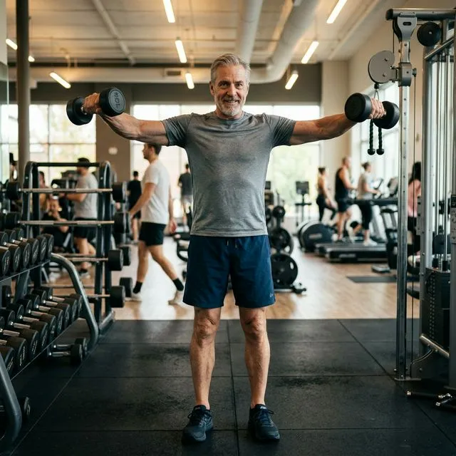

Wchodzisz na siłownię z dobrymi chęciami. I to jest już połowa sukcesu. Ale jest kilka błędów, które popełnia prawie każdy po pięćdziesiątce — i które potrafią zniszczyć cały wysiłek zanim cokolwiek się zacznie. Jeśli dopiero startujesz, zacznij też od tekstu jak zacząć na siłowni po 50-tce. A jeśli problemem jest już sam opór przed wyjściem z domu, przeczytaj również jak zbudować motywację do ćwiczeń po 50-tce. Oto one.
Kluczowe wnioski
- Najważniejsze: Wchodzisz na siłownię z dobrymi chęciami.
- W artykule znajdziesz konkrety o: BŁĄD #1 Za ciężko na start.
- Drugi kluczowy temat: BŁĄD #2 Pomijanie rozgrzewki.
BŁĄD #1 Za ciężko na start
Chcesz nadrobić lata w tydzień. Rozumiem to uczucie — w końcu, ile można zwlekać. Ale ciało po pięćdziesiątce reaguje na nowe obciążenie inaczej niż ciało dwudziestolatka. Ścięgna i stawy adaptują się znacznie wolniej niż mięśnie.

Co to znaczy w praktyce? Możesz poczuć się silny po tygodniu treningu, bo mięśnie odpowiadają szybko — ale ścięgno Achillesa, chrząstka kolana czy mankiet rotatorów w ramieniu potrzebują kilku tygodni, żeby dogonić mięśnie. Jeśli w tym czasie dasz im za dużo — naciągniesz, przeciążysz, kontuzjujesz. I zamiast trenować, będziesz odpoczywać przez miesiąc.
Jak to naprawić: Zacznij od 50-60% tego co czujesz, że możesz zrobić. Technika i zakres ruchu — przed ciężarem. Ten spokojny start opisuję też szerzej w przewodniku jak zacząć chodzić na siłownię po 50-tce.
Przeciążenie treningowe powoduje adaptacje mięśniowo-szkieletowe, które mogą być szkodliwe dla wydajności i wiązać się ze zwiększonym ryzykiem kontuzji. Tkanki łączne (ścięgna, chrząstki) potrzebują znacznie więcej czasu na adaptację niż same mięśnie.
Źródło: PubMed — Musculoskeletal adaptations and injuries due to overtraining. Sports Medicine ReviewBŁĄD #2 Pomijanie rozgrzewki
Wchodzisz na siłownię, siadasz przy maszynie i zaczynasz. Po co marnować czas na rozgrzewkę, skoro i tak masz tylko godzinę? To bardzo kosztowna oszczędność. Z wiekiem produkcja kolagenu spada, mięśnie tracą elastyczność, a stawy stają się sztywniejsze.

Zimny mięsień — to mięsień z obniżonym przepływem krwi i mniejszą elastycznością. Nagłe obciążenie takiego mięśnia to najprostsza droga do naciągnięcia lub urazu. Fizjoterapeuci są w tej sprawie zgodni: po 50-tce ryzyko kontuzji bez rozgrzewki rośnie istotnie — bo ciało reaguje wolniej na nagłe, nieoczekiwane obciążenia.
Jak to naprawić: 5-10 minut dynamicznego ruchu przed treningiem. Nie statyczne rozciąganie — tylko ruch: krążenia ramion, przysiady bez obciążenia, wypady bez ciężaru. Rozgrzej to co zaraz będziesz ćwiczyć. Na pierwszą wizytę na siłowni wchodź już z takim nawykiem.
Mięśnie bez rozgrzewki mają obniżony przepływ krwi i elastyczność. Przejście od razu do statycznych rozciągnięć lub intensywnych ćwiczeń może prowadzić do naciągnięć i urazów. Rozgrzewka dynamiczna z pełnym zakresem ruchu jest szczególnie istotna dla osób starszych.
Źródło: Eat This Not That / Physical Therapist Review 2025 — Warm-up mistakes over 50BŁĄD #3 Tylko cardio — bieżnia, orbitrek i nic więcej
Ćwiczysz regularnie — bieżnia trzy razy w tygodniu, może orbitrek. Czujesz się lepiej, masz więcej energii. Świetnie. Ale jest jedno słowo, które samo cardio kompletnie ignoruje: mięśnie.

Po 50-tce tracimy 1-2% masy mięśniowej rocznie. Każdego roku. Cicho, bez bólu, bez dramatycznych objawów. A mięśnie to nie jest kwestia wyglądu — to metabolizm, to stabilność stawów, to gęstość kości i to właśnie sprawność za 15 lat. Bieżnia tego nie zatrzyma. Siłownia — tak.
Jak to naprawić: Dwie sesje siłowe tygodniowo to minimum. Nie rezygnujesz z cardio — dodajesz do niego trening oporowy. Razem są silniejsi niż każde z osobna. A kiedy już wejdziesz w rytm, szybko zobaczysz też, że siłownia daje coś więcej niż sprawność, co opisuję szerzej w tekście o tym, dlaczego siłownia po 50-tce jest miejscem dla ludzi.
Po 30. roku życia tracimy 3-8% masy mięśniowej na dekadę. Trening oporowy jest jedyną naukowo potwierdzoną metodą hamowania sarkopenii. Samo cardio nie daje wystarczającego bodźca do odbudowy i utrzymania masy mięśniowej.
Źródło: Journal of Cachexia, Sarcopenia and Muscle 2023 / Harvard Health Publishing 2024BŁĄD #4 Brak regeneracji — więcej to lepiej
Masz motywację, czujesz, że w końcu zaczynasz — i chcesz ćwiczyć codziennie. To jeden z najczęstszych błędów i jeden z najtrudniejszych do zaakceptowania: odpoczynek nie jest nagrodą za trening. Odpoczynek jest częścią treningu.
Mięśnie rosną i naprawiają się nie podczas ćwiczeń — tylko po nich, w czasie regeneracji. Jeśli nie dajesz im czasu, nie dajesz im też szansy na adaptację. Po 50-tce regeneracja zajmuje po prostu więcej czasu niż w młodości — to fakt fizjologiczny, nie wymówka. Ciało, które nie odpoczęło, to ciało, które jest bliżej kontuzji niż postępu.
Jak to naprawić: Przerwa 48 godzin między sesjami angażującymi te same partie mięśniowe. Sen 7-8 godzin — badania pokazują, że to właśnie w głębokim śnie uwalniane są hormony regeneracyjne. Trzy sesje w tygodniu na początek to optymalny rytm.
Przeciążenie treningowe bez odpowiedniej regeneracji prowadzi do osłabienia wydajności i zwiększa ryzyko kontuzji. Optymalna wydajność wymaga nie tylko właściwego programu treningowego, ale też zaplanowanych dni odpoczynku i odpowiedniej ilości snu.
Źródło: PubMed / Buffalo Chiropractic and Physical Therapy 2024BŁĄD #5 Ignorowanie bólu stawów — "przejdzie"
Ból mięśni dzień po treningu — normalny. To tzw. DOMS — oznaka, że mięśnie pracowały i teraz się regenerują. To jest w porządku. Ale ból stawów — kolana, bioder, łokcia, barku — to coś zupełnie innego. To sygnał alarmowy.
Kontynuowanie treningu przy bólu stawu nie jest twardością — to prosta droga do przekształcenia drobnego problemu w poważny. Chrząstka stawowa po 50-tce regeneruje się znacznie wolniej. Zaniedbany sygnał bólowy potrafi wyłączyć Cię z treningu na miesiące — albo doprowadzić do zmian, których nie cofniesz.
Jak to naprawić: Ból mięśni — ćwicz. Ból stawu — stop. Dwa-trzy dni przerwy, obniż obciążenie, zmień ćwiczenie. Jeśli ból wraca regularnie — skonsultuj się z fizjoterapeutą.
Chrząstka stawowa i ścięgna mają znacznie niższy poziom ukrwienia niż mięśnie, co sprawia, że ich regeneracja trwa znacznie dłużej. Ignorowanie bólu "mechanicznego" w stawie prowadzi do stanów zapalnych, które są trudne do wyleczenia bez długiej przerwy.
Źródło: Cleveland Clinic 2025 / Physical Therapy JournalŹródła i bibliografia
- PubMed — Musculoskeletal adaptations and injuries due to overtraining. Sports Medicine Review. pubmed.ncbi.nlm.nih.gov/1623894/
- Afonso, J. et al. (2024). Revisiting the Whys and Hows of the Warm-Up. PMC / Sports Medicine. ncbi.nlm.nih.gov/pmc/articles/PMC10798919/
- Wiedmann, N. et al. (2023). Exercise for sarcopenia in older people: A systematic review. Journal of Cachexia, Sarcopenia and Muscle. doi: 10.1002/jcsm.13225
- Harvard Health Publishing (2024). Preserve your muscle mass. Harvard Medical School. health.harvard.edu/staying-healthy/preserve-your-muscle-mass
- Cleveland Clinic. Sarcopenia (Muscle Loss): Symptoms, Causes & Treatment. my.clevelandclinic.org/health/diseases/23167-sarcopenia
FAQ
Jakie błędy treningowe po 50 najczęściej zatrzymują efekty?
Najczęściej: za duża intensywność na start, brak planu, za mało siły i za mało snu. Problemem bywa też nieregularność i częste zmiany programu.
Czy po 50 lepiej ćwiczyć lżej, ale częściej?
Najczęściej tak, bo regularność wygrywa z jednorazowymi zrywami. Dla wielu osób lepiej działa 3-4 krótsze sesje niż jeden bardzo ciężki trening.
Ile czasu potrzeba, żeby zobaczyć pierwsze efekty po 50?
Pierwsze zmiany samopoczucia często pojawiają się po 2-4 tygodniach. Na wyraźniejsze efekty sylwetkowe i siłowe zwykle potrzeba 8-12 tygodni konsekwencji.